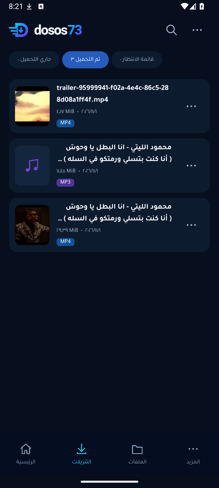
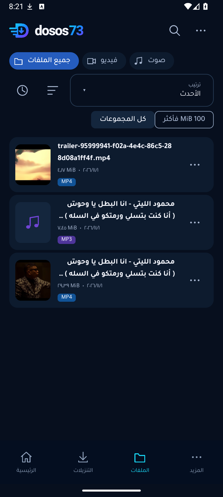

Choose before saving
Review the format, quality, and destination before a transfer starts.
Open-source downloader for Android
Paste a link and choose the quality and format. Save video or MP3 audio and find it again in the app’s library.

Review the format, quality, and destination before a transfer starts.
Audio keeps playing in the background, including sound from video. Control it from Android’s media notification.
Follow your download queue and search or share files from the library.
Open any screenshot to see it at full size.



APK SHA-256
f5fe7e277d60b003f4c6b987e3c8bf50d227eb42af110099a766cabdfc6871b4